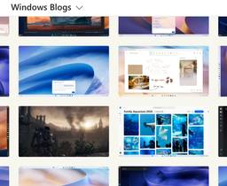
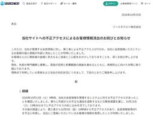
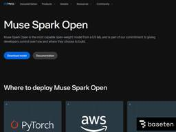

直近1週間の人気フィード
はてなブックマーク数を元に新着優先で並べ替え

コード系でOpus 5超え「DeepSeek-V4.1-Flash-1017」無償公開 61
61 PC Watch
PC Watch
前バージョンの登場からわずか37日、DeepSeekの“Flash”がまた強くなった。DeepSeekは10月17日(日本時間)、AIモデル「DeepSeek-V4.1-Flash-1017」を発表した。同日のうちに、オープンウェイト(モデルの重み)はMITライセンスのもとHugging Faceで無償公開され、商用利用も認められる。総パラメータ数552B(5,520億)ながら、コード修正ベンチマーク「DeepSWE v1.1」は77.0で、Anthropicの最上位級「Claude Opus 5」の74.0を上回る。
11時間前

メモリ8GBのPCを救えるか。Windows 11、応答性が最大20%向上 26 PC Watch
メモリ8GBのPCで、改善の効果はとりわけ大きいという。Microsoftは10月15日(現地時間)、Windows 11の性能改善の成果と新機能を公式ブログで発表した。一連の改善により、日常操作の応答性は同社の測定で最大20%向上したという。
2日前
PCデスク周りの便利グッズ50選！悔しいけど欲しくなるおすすめガジェット【2026年】 36 デジスタ
本業が在宅勤務メインのWebディレクターということもあり、ガジェットブロガーとして活動する今も、1日のほとんどを自宅のPCデスクで過ごしています。 そんな在宅デスクワーカーの僕は、作業効率を上げてくれるアイテムには積極的 ...
2日前

パスワードも流出、ソースネクスト会員情報約2,252万件
17 PC Watch
ソースネクストは10月15日、同社が管理する会員情報に対して第三者による不正アクセスが行なわれ、会員の個人情報が外部に流出したと発表した。流出した可能性がある件数は2,251万9,960件に上る。
2日前
長期記憶でOpus 5超えをうたう「Hy-Memory-30B-A3B」、無償公開 3 PC Watch
AIエージェントの記憶の質は、会話のどの部分を書き残すかで決まる。その判断に特化した小型AIモデルが「Hy-Memory-30B-A3B」だ。TencentのAI開発チームTencent Hunyuanが10月16日(日本時間)、オープンウェイト(モデルの重み)としてHugging Faceで公開した。会話から記憶を作成して保存する性能の平均スコアは、同社の計測でAnthropicの「Claude Opus 5」を上回った。ライセンスはApache 2.0で、商用利用・改変・再配布が無償で認められる。
2日前

Meta、最高性能うたう米オープンウェイト「Muse Spark Open」を公開 3 PC Watch
これまでで最も高性能な米国製オープンウェイトモデルをうたう「Muse Spark Open」のウェイト(モデルの重み)が10月15日に公開された。Metaが提供するAIモデルで、Apple Silicon向けの最適化を施しており、M5 Ultra搭載Mac Studioを2台使用して、デスクトップでの利用も実現したとする。
2日前
74Bが24GBに！ローカルAI向けNemotron 3.5 Bolt登場 3 PC Watch
メモリ24GBに収まり、ローカルで動作するエージェントAI向けのモデルが登場した。NVIDIAは10月15日(米国時間)、オープンモデル「Nemotron」シリーズの新モデルとして、「Nemotron 3.5 Super VL」と「Nemotron 3.5 Bolt 74B-A9B 24GB」をオープンウェイト(モデルの重み)としてHugging Faceで公開した。より小型の「Nemotron 3.5 Bolt E4B 4GB」も10月23日に公開すると予告している。
2日前
【2026最新】マリオットアメックス完全ガイド｜年会費・特典・ポイント・無料宿泊 3 Creca-Style
Creca-Style
マリオットアメックスの年会費、ポイント還元率、無料宿泊特典、マイル交換、エリート会員資格を解説。一般カードとプレミアムの違いやメリット・デメリットを比較し、自分に合うカードを選ぶための判断基準を紹介します。
5日前